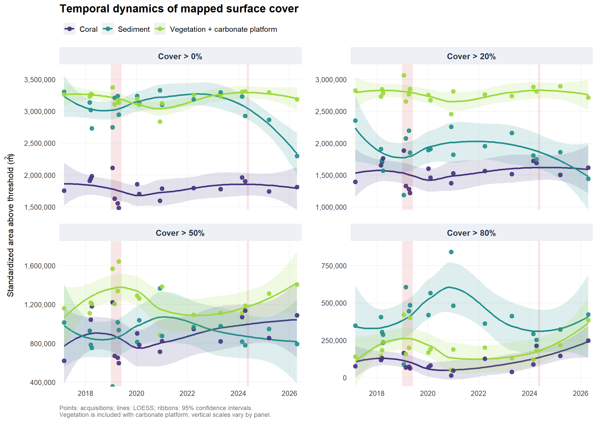
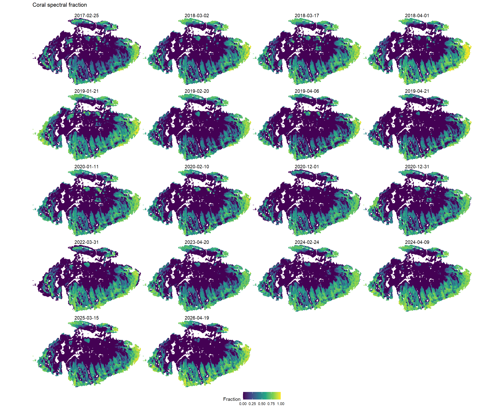
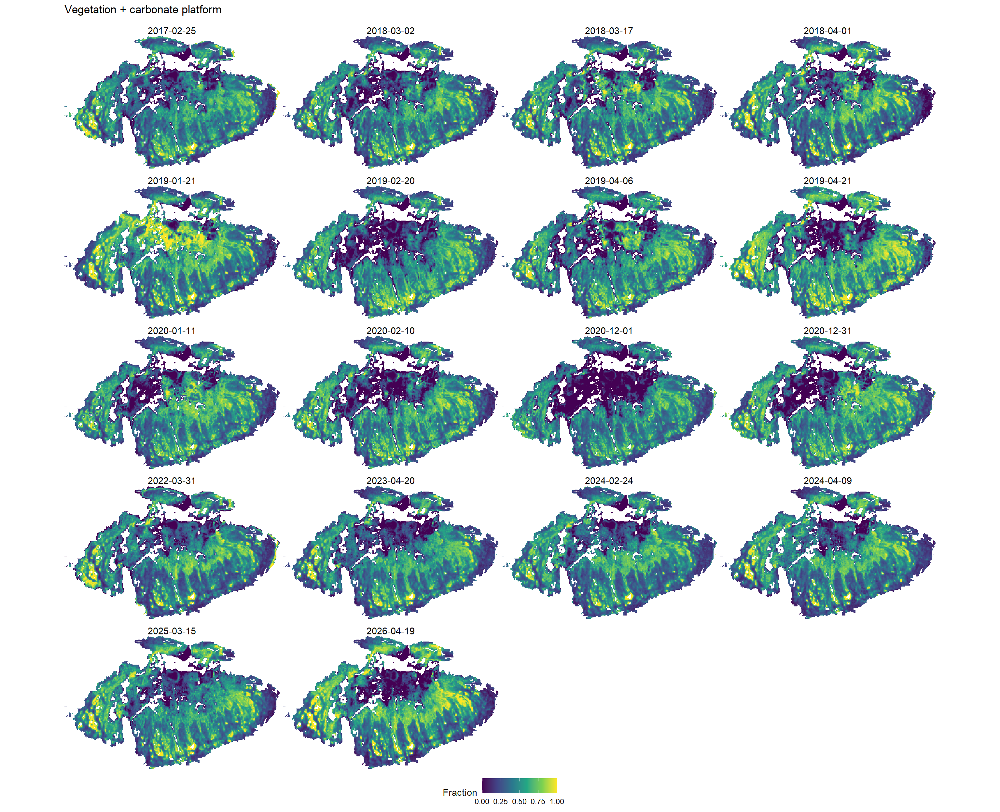
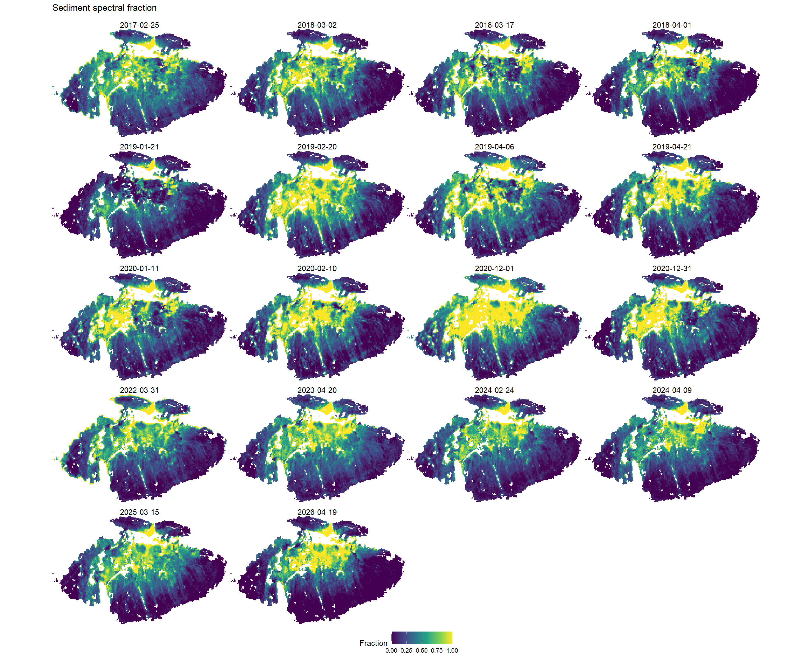

flowchart TD A[Reference spectra] --> B[Weight spectra by Sentinel-2 band responses] B --> C[Endmember matrix] D[Multiband images and geomorphic zones] --> E[Non-negative spectral unmixing] C --> E E --> F[Group endmembers into cover classes] F --> G[Normalize the four benthic classes without water] H[Selected images: NDWI greater than 0.3] --> I[Retain pixels never flagged as water] G --> J[Apply spatial masks and select dates] I --> J J --> K[Threshold areas and temporal maps]
Coral reef cover in Brazil
Spectral unmixing and temporal patterns, 2017–2025
Overview
This analysis estimates the relative contributions of coral, vegetation, sediment, water, and carbonate platform spectra to Sentinel-2 imagery. It then compares mapped cover across 13 selected acquisitions from February 2017 to March 2025 within the third feature of the geomorphic-zone layer. The identity of this feature should be checked before interpreting it as a named habitat.
The estimates are spectral fractions, rather than field measurements of live coral cover. Water depth, atmospheric correction, illumination, and similarities between reference spectra can affect their ecological interpretation.
Methods
Workflow
Spectral library and band integration
Reference spectra represent coral, brown algae, mixed vegetation, seagrass, zooxantid, sand, and carbonate platform. Each spectrum is averaged over the wavelengths shared with a band’s spectral response function:
\[ \bar{R}_{k,b} = \frac{\sum_{\lambda} R_k(\lambda) S_b(\lambda)} {\sum_{\lambda} S_b(\lambda)}. \]
The implementation joins wavelengths exactly; it does not interpolate spectra. Missing values are excluded from each weighted mean. Water is supplied directly as band-level reflectance. Band B6 is omitted from the endmember matrix. The source code uses S2B response functions, including for images with other platform prefixes; this choice and the reflectance units should be verified before scientific interpretation.
Preprocessing is disabled by default because the existing processed rasters are used below. Set params.run_preprocessing: true to rebuild them. The source images must already be aligned multiband GeoTIFFs with matching band names.
Code
img_list <- list.files("Data/img/img", pattern = "\\.tif$", include.dirs = TRUE, full.names = TRUE) |>
as_tibble() |>
rename(path = "value") |>
mutate(
filename = basename(path),
date = substr(filename, 12, 19) |>
as.Date(format = "%Y%m%d")
) |>
dplyr::filter(!str_detect(filename, "\\.zip$"))
bands <- c("B1", "B2", "B3", "B4", "B5", "B6", "B7", "B8", "B8A")
wl <- c(
442.25, 492.34, 558.95, 664.56, 703.89,
739.10, 779.73, 832.88, 864.76
)
bands_to_df <- tibble(
band = bands,
wl = wl
)
coral <- read.csv("Data/Spectral_Library/coral_Brazil.csv", sep = ",", header = FALSE)
names(coral) <- c("wl", "Coral")
water <- read.csv("Data/Spectral_Library/water_spectra_S2.csv", sep = ";")
names(water) <- c("wl", "water")
water <- water |>
mutate(band = c("B1", "B2", "B3", "B4", "B5", "B6", "B7", "B8", "B8A", NA, NA)) |>
dplyr::filter(!is.na(band)) |>
mutate(raw = "water") |>
dplyr::select(raw, band, reflectance = "water", wl)
brownalgae <- read.csv("Data/Spectral_Library/brownalgae_Brazil.csv", sep = ",", header = FALSE)
names(brownalgae) <- c("wl", "Brown_Algae")
speclib <- read.csv("Data/Spectral_Library/Spectral_Library.csv", sep = ",") |>
dplyr::select(wl, Mixed.Vegetation, Lizard.Seagrass)
new_spectlib <- read.csv("Data/Spectral_Library/spectra_sand_zooxantid_abrolhos.csv", sep = ";")
names(new_spectlib) <- c("wl", "zooxantid", "Sand")
plat <- read.csv("Data/Spectral_Library/campo_abrolhos_brutos.csv", sep = ";") |>
mutate(Carbo_plat = as.numeric(Carbo_plat))
names(plat) <- c("wl", "platCarb")
df_lib <- coral |>
left_join(brownalgae, by = "wl") |>
left_join(speclib, by = "wl") |>
left_join(new_spectlib, by = "wl") |>
left_join(plat, by = "wl") |>
as_tibble() |>
pivot_longer(-wl, names_to = "raw", values_to = "reflectance")
srf <- readxl::read_excel("Data/COPE-GSEG-EOPG-TN-15-0007 - Sentinel-2 Spectral Response Functions 2024 - 4.0.xlsx",
sheet = "Spectral Responses (S2B)"
) |>
rename(wl = SR_WL) |>
pivot_longer(-wl, names_to = "raw", values_to = "srf") |>
mutate(band = str_remove(raw, "^S2B_SR_AV_")) |>
filter(band %in% bands, is.finite(srf), srf > 0)
conv <- df_lib |>
inner_join(select(srf, wl, band, srf), by = "wl", relationship = "many-to-many") |>
summarise(reflectance = weighted.mean(reflectance, srf, na.rm = TRUE), .by = c(raw, band)) |>
mutate(band = factor(band, bands)) |>
left_join(bands_to_df, by = "band") |>
bind_rows(water)
ggplot(conv, aes(x = wl, y = reflectance, color = raw, group = raw)) +
geom_line()
em <- conv |>
dplyr::filter(band != "B6") |>
mutate(
band = str_replace(
band,
"^B([1-9])$",
"B0\\1"
)
) |>
select(raw, band, reflectance) |>
pivot_wider(
names_from = band,
values_from = reflectance
) |>
column_to_rownames("raw") |>
as.matrix()
mask <- vect("Data/geomorphic_zones/geomorphic_zones_v5.shp") |>
project("EPSG:32724")Unmixing and class aggregation
For each masked image, RStoolbox::mesma() is called with non-negative least squares (NNLS) and a sum-to-one constraint. Coral and zooxantid fractions are combined as Coral; mixed vegetation, seagrass, and brown algae form Vegetation. Sand becomes Sediment. Water and carbonate platform remain separate.
RMSE describes spectral reconstruction error and is kept separate from cover normalization. The four benthic classes are subsequently divided by their sum:
\[f^{\mathrm{benthic}}_k = f_k / \sum_{j \in \mathrm{benthic}} f_j.\]
Pixels with zero benthic sum are assigned missing values. These fractions describe composition conditional on the benthic signal, not absolute cover of a full pixel.
Code
for (directory in c("RAW_mesma", "Summarised_mesma", "STD_mesma", "STD_mesma_noWater")) {
dir.create(file.path("Data/img", directory), recursive = TRUE, showWarnings = FALSE)
}
for (i in seq_len(nrow(img_list))) {
message("Processing scene ", i, " of ", nrow(img_list))
img_i <- rast(paste0("Data/img/img/", gsub(".SAFE", ".tif", img_list$filename[i]))) |>
crop(mask, mask = TRUE)
# Match raster layers to the endmember columns by name and order.
stopifnot(all(colnames(em) %in% names(img_i)), all(is.finite(em)))
img_i <- img_i[[colnames(em)]]
fractions_unmixing1 <- RStoolbox::mesma(
img = img_i,
em = em,
method = "NNLS",
sum_to_one = TRUE
)
writeRaster(fractions_unmixing1, paste0("Data/img/RAW_mesma/", gsub(".SAFE", "_MESMA.tif", img_list$filename[i])), overwrite = TRUE)
sed <- fractions_unmixing1$Sand
cor <- fractions_unmixing1$Coral + fractions_unmixing1$zooxantid
veg <- fractions_unmixing1$Mixed.Vegetation + fractions_unmixing1$Lizard.Seagrass + fractions_unmixing1$Brown_Algae
wat <- fractions_unmixing1$water
Carb <- fractions_unmixing1$platCarb
summarised_mesma <- c(sed, cor, veg, wat, Carb, fractions_unmixing1$RMSE)
names(summarised_mesma) <- c("Sediment", "Coral", "Vegetation", "Water", "Carbonatic Platform", "RMSE")
writeRaster(summarised_mesma, paste0("Data/img/Summarised_mesma/", gsub(".SAFE", "_Summarised_MESMA.tif", img_list$filename[i])), overwrite = TRUE)
total <- terra::app(summarised_mesma[[1:5]], sum)
total[total == 0] <- NA
total_sum <- c(summarised_mesma[[1:5]] / total, summarised_mesma[["RMSE"]])
writeRaster(total_sum, paste0("Data/img/STD_mesma/", gsub(".SAFE", "_STD_MESMA.tif", img_list$filename[i])), overwrite = TRUE)
}
filelist <- list.files("Data/img/STD_mesma/", pattern = ".tif", full.names = TRUE) |>
as_tibble() |>
rename(path = value) |>
mutate(filename = basename(path))
for (i in seq_len(nrow(filelist))) {
message("Processing scene ", i, " of ", nrow(img_list))
img_i <- rast(filelist$path[i])
benthic_total <- img_i$Vegetation + img_i$Sediment + img_i$Coral + img_i$`Carbonatic Platform`
benthic_total[benthic_total <= 0] <- NA
coral <- img_i$Coral / benthic_total
Vegetation <- img_i$Vegetation / benthic_total
Sediment <- img_i$Sediment / benthic_total
Platform <- img_i$`Carbonatic Platform` / benthic_total
new_rast <- c(coral, Vegetation, Sediment, Platform)
names(new_rast) <- c("Coral", "Vegetation", "Sediment", "Carbonatic Platform")
writeRaster(new_rast, paste0("Data/img/STD_mesma_noWater/", gsub("_STD_MESMA.tif", "_STD_MESMANoWater.tif", filelist$filename[i])), overwrite = TRUE)
}Temporal water mask
NDWI is calculated as \((B03-B08)/(B03+B08)\). A pixel is flagged as water when NDWI exceeds 0.3 on any selected date. The retained polygon contains pixels never flagged as water across those dates. This is a restrictive temporal mask, not a map of persistent water. Missing observations propagate through the sum and are excluded. The threshold has not been validated here.
Code
selected_date <- tibble(date = selected_dates)
img_list <- list.files("Data/img/img", pattern = "\\.tif$", include.dirs = TRUE, full.names = TRUE) |>
as_tibble() |>
rename(path = "value") |>
mutate(
filename = basename(path),
date = substr(filename, 12, 19) |>
as.Date(format = "%Y%m%d")
) |>
dplyr::filter(!str_detect(filename, "\\.zip$")) |>
dplyr::filter(date %in% selected_date$date)
for (i in seq_len(nrow(img_list))) {
img_i <- rast(img_list$path[i])
ndwi <- (img_i$B03 - img_i$B08) / (img_i$B03 + img_i$B08)
mask_i <- ndwi > 0.3
if (i == 1) {
mask <- mask_i
} else {
mask <- mask + mask_i
}
}
names(mask) <- "never_water"
mask_shp <- (mask == 0) |>
terra::as.polygons(dissolve = TRUE) |>
sf::st_as_sf() |>
dplyr::filter(never_water == 1)
sf::write_sf(mask_shp, "Data/mask_water.shp")Comparable areas and cover thresholds
After intersecting the retained mask with the selected geomorphic feature, Vegetation is merged with carbonate platform for reporting. A class contributes a pixel’s full area when its fraction strictly exceeds 0%, 20%, 50%, or 80%. These are areas of pixels above a threshold, not fraction-weighted habitat areas. Classes may overlap at low thresholds, so their areas must not be added.
For date \(t\), class \(k\), and threshold \(q\), the reported area is
\[A_{t,k,q} = \frac{n_{t,k,q}}{n_{t,\mathrm{valid}}} \operatorname{median}_t(n_{t,\mathrm{valid}}) \, a_{\mathrm{pixel}}.\]
This adjusts for changing valid-pixel counts but does not guarantee an identical spatial footprint. The accompanying coverage figure makes that variation visible. Areas use pixel dimensions in a projected CRS with metre units.
Results
Temporal threshold areas
Points show individual acquisitions. LOESS lines summarize variation through time; the ribbons are model-based 95% confidence intervals for the smoother, not uncertainty in the spectral fractions. Irregular sampling and several observations within a year limit interpretation as an annual trend.
Code
# ============================================================
# 1. PARAMETERS
# ============================================================
img_dir <- "Data/img/STD_mesma_noWater/"
thresholds <- c(0, 0.2, 0.5, 0.8)
dir.create("Figures", showWarnings = FALSE)
# ============================================================
# 2. LOAD IMAGES AND MASKS
# ============================================================
img_list <- list_scenes(img_dir, "\\.tif$") |>
filter(date %in% selected_dates)
stopifnot(nrow(img_list) > 0, setequal(img_list$date, selected_dates))
mask_water <- terra::vect("Data/mask_water.shp")
mask_all <- terra::vect(
"Data/geomorphic_zones/geomorphic_zones_v5.shp"
)[3, ]
# ============================================================
# 3. EXTRACT AREAS FOR ALL THRESHOLDS
# ============================================================
extract_areas <- function(i) {
message(
"Processing image ",
i, "/", nrow(img_list)
)
r <- terra::rast(img_list$path[i])
if (terra::is.lonlat(r)) {
stop("Raster must use a projected CRS in metres.")
}
pixel_area <- abs(prod(terra::res(r)))
water <- terra::project(mask_water, terra::crs(r))
zone <- terra::project(mask_all, terra::crs(r))
r <- r |>
terra::crop(water, mask = TRUE) |>
terra::crop(zone, mask = TRUE)
v <- as.data.frame(r, na.rm = FALSE)
# Merge vegetation and carbonate platform for the reporting class.
v[["Carbonatic Platform"]] <-
v[["Carbonatic Platform"]] + v[["Vegetation"]]
v[["Vegetation"]] <- NULL
# Remove invalid pixels
v <- v[complete.cases(v), , drop = FALSE]
if (nrow(v) == 0) {
stop("No valid pixels in ", img_list$filename[i])
}
n_valid <- nrow(v)
v <- as.matrix(v)
# Compute areas for every threshold
purrr::map_dfr(thresholds, function(th) {
tibble(
Class = colnames(v),
threshold = th,
date = img_list$date[i],
n_above = as.integer(colSums(v > th)),
n_valid = n_valid,
pixel_area = pixel_area
)
})
}
df_out <- purrr::map_dfr(
seq_len(nrow(img_list)),
extract_areas
)
# ============================================================
# 4. PREPARE DATA
# ============================================================
if (n_distinct(round(df_out$pixel_area, 6)) != 1) {
stop("Images have different pixel resolutions.")
}
pixel_area <- first(df_out$pixel_area)
# Reference footprint for comparable area estimates
reference_n <- df_out |>
distinct(date, n_valid) |>
pull(n_valid) |>
median()
reference_area <- reference_n * pixel_area
df_out <- df_out |>
mutate(
Class = factor(Class,
levels = c("Coral", "Sediment", "Carbonatic Platform"),
labels = c("Coral", "Sediment", "Vegetation + carbonate platform")
),
area = (n_above / n_valid) * reference_area,
threshold_label = factor(
threshold,
levels = thresholds,
labels = c(
"Cover > 0%",
"Cover > 20%",
"Cover > 50%",
"Cover > 80%"
)
)
)
# Plot observed areas and descriptive temporal smooths.
# Highlighted periods retained from the original analysis.
events <- tibble(
xmin = as.Date(c("2019-01-01", "2024-05-01")),
xmax = as.Date(c("2019-06-01", "2024-06-01"))
)
p <- ggplot(
df_out,
aes(
x = date,
y = area,
color = Class,
fill = Class,
group = Class
)
) +
# Draw the shaded periods behind the observations and smooths.
geom_rect(
data = events,
aes(xmin = xmin, xmax = xmax, ymin = -Inf, ymax = Inf),
inherit.aes = FALSE,
fill = "#E99A9A",
alpha = 0.25
) +
# LOESS curves with 95% confidence intervals
geom_smooth(
method = "loess",
alpha = 0.15
) +
# Observed areas
geom_point(
size = 2.6,
alpha = 0.9
) +
# Four panels
facet_wrap(
~threshold_label,
ncol = 2,
scales = "free_y"
) +
# Colors
scale_color_viridis_d(
option = "D",
begin = 0.15,
end = 0.85
) +
scale_fill_viridis_d(
option = "D",
begin = 0.15,
end = 0.85
) +
# Axes
scale_x_date(
date_breaks = "2 years",
date_labels = "%Y",
expand = expansion(mult = c(0.02, 0.02))
) +
scale_y_continuous(
labels = scales::label_comma(),
expand = expansion(mult = c(0, 0.08))
) +
coord_cartesian(ylim = c(NA, NA)) +
# Labels
labs(
title = "Temporal dynamics of mapped surface cover",
x = NULL,
y = expression("Standardized area above threshold (m"^2 * ")"),
caption = "Points: acquisitions; lines: LOESS; ribbons: 95% confidence intervals.\nVegetation is included with carbonate platform; vertical scales vary by panel.",
color = NULL,
fill = NULL
) +
guides(fill = "none") +
theme_minimal(base_size = 12) +
theme(
plot.title = element_text(
size = 16,
face = "bold",
margin = margin(b = 6)
),
plot.subtitle = element_text(
size = 10,
color = "grey40",
margin = margin(b = 16)
),
plot.caption = element_text(
size = 9,
color = "grey45",
hjust = 0,
margin = margin(t = 12)
),
axis.title.y = element_text(
size = 12,
margin = margin(r = 12)
),
axis.text = element_text(
size = 10,
color = "grey25"
),
strip.background = element_rect(
fill = "#EDF1F5",
color = NA
),
strip.text = element_text(
size = 12,
face = "bold",
color = "#253348",
margin = margin(7, 0, 7, 0)
),
panel.grid.minor = element_blank(),
panel.grid.major = element_line(
color = "grey90",
linewidth = 0.3
),
panel.spacing = unit(1.4, "lines"),
legend.position = "top",
legend.justification = "left",
legend.text = element_text(size = 11)
)
print(p)
# ============================================================
# 7. EXPORT
# ============================================================
ggsave(
"Figures/LOESS_area_thresholds.png",
plot = p,
width = 12,
height = 8.5,
dpi = 400,
bg = "white"
)
ggsave(
"Figures/LOESS_area_thresholds.pdf",
plot = p,
width = 12,
height = 8.5,
bg = "white"
)
Spatial distribution
The coral maps show a recurring spatial pattern: higher coral-associated fractions occur around much of the outer mapped margin, while extensive interior areas have low fractions. The magnitude varies between acquisitions. These maps support spatial comparison but do not by themselves establish the biological cause of the differences.
The maps use a fixed fraction scale from 0 to 1 across dates and classes. They show where modeled composition differs, complementing the area summaries. Map patterns should be checked against source imagery and field observations before being interpreted as coral loss, recovery, or habitat conversion.
Code
ncol_maps <- 4
# Align each vector mask to the current raster before cropping.
r_list <- lapply(img_list$path, function(path) {
r <- rast(path)
water <- terra::project(mask_water, crs(r))
zone <- terra::project(mask_all, crs(r))
r <- crop(r, water, mask = TRUE) |> crop(zone, mask = TRUE)
layers <- list(
Coral = r[["Coral"]],
Vegetation_Carbonate = r[["Vegetation"]] + r[["Carbonatic Platform"]],
Sediment = r[["Sediment"]]
)
lapply(layers, function(layer) {
names(layer) <- "Cover"
layer
})
})
plot_temporal <- function(variable, title, filename) {
rasters <- lapply(r_list, `[[`, variable)
maps <- map2(rasters, img_list$date, function(r, date) {
# Sampling affects display only; area calculations use all valid pixels.
display <- as.data.frame(
terra::spatSample(r,
size = min(ncell(r), 200000),
method = "regular", as.raster = TRUE
),
xy = TRUE, na.rm = TRUE
)
ggplot(display, aes(x, y, fill = Cover)) +
geom_raster() +
scale_fill_viridis_c(
limits = c(0, 1), na.value = "transparent",
name = "Fraction"
) +
coord_equal(expand = FALSE) +
labs(title = format(date, "%Y-%m-%d")) +
theme_void() +
theme(
plot.title = element_text(hjust = 0.5, size = 11),
plot.margin = margin(2, 2, 2, 2)
)
})
p <- wrap_plots(maps, ncol = ncol_maps, guides = "collect") +
plot_annotation(title = title) & theme(legend.position = "bottom")
ggsave(file.path("Figures", filename), p,
width = 16, height = 13,
dpi = 300, bg = "white"
)
p
}
plot_temporal("Coral", "Coral spectral fraction", "Temporal_Coral.png")
plot_temporal(
"Vegetation_Carbonate", "Vegetation + carbonate platform",
"Temporal_Vegetation_Carbonate.png"
)
plot_temporal("Sediment", "Sediment spectral fraction", "Temporal_Sediment.png")

